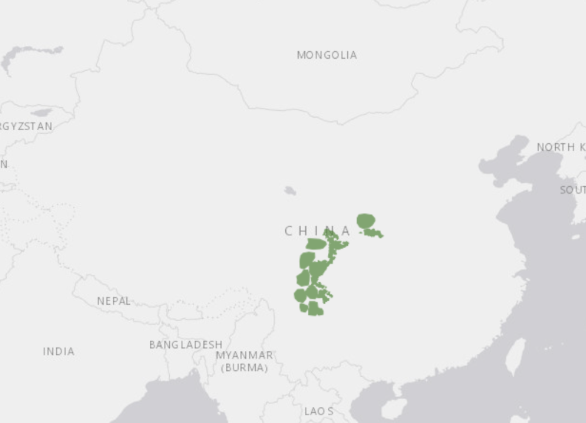

Panda
This is the area where Pandas are found!

Most commonly known as the Panda, the Panda is most found in smaller parts in Southwest China.
Pandas can weigh up to 300 pounds and can live up to 20 years. Due to their diet consisting of 90% bamboo, conservation efforts are made to maintain their population due to their inability to survive on anything else.
Fun fact! Pandas eyes are very different to others bears, instead, they have vertical slits for pupils!